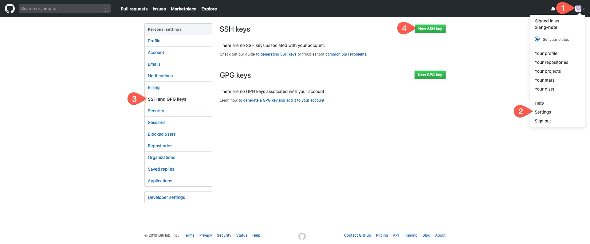
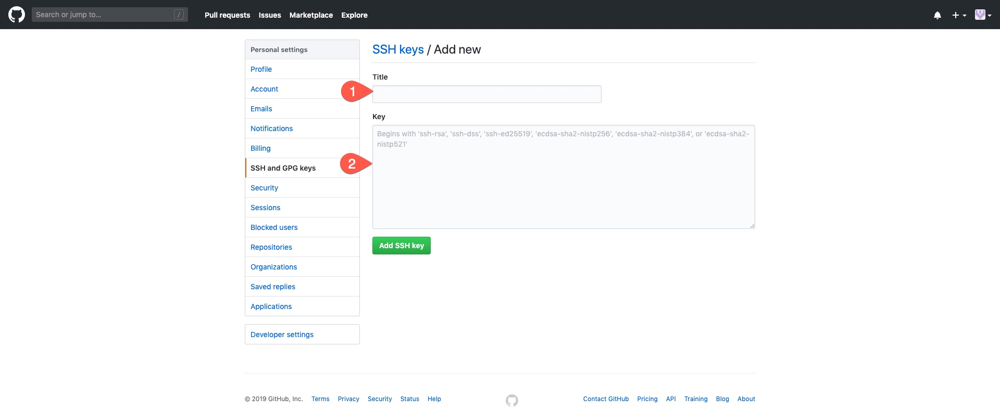

由於申請一組 GitHub 帳號來放置筆記，但原先就有一組帳號正常在使用，造成新申請的沒辦法正常 push 。
解法
搜尋了許多文章找到解法方法，大致原理是透過不同的 Hostname 來決定使用不同的 SSH key 進行溝通。
產生新的 SSH key
cd ~/.ssh
# ~/.ssh
ssh-keygen -t rsa -C "your@email.com" "id_rsa_new"
將會產生 id_rsa_new 及 id_rsa_new.pub 兩個檔案
把 SSH key 加至 GitHub

- 點擊帳號頭像展開列表
- 點選
Settings - 點選
SSH and GPG keys - 點擊
New SSH key
複製公鑰
複製 ~/.ssh/id_rsa_new.pub 檔案內容
若 macOS 用戶可直接透過 terminal 進行複製
pbcopy < ~/.ssh/id_rsa_new.pub
新增 SSH key

Title打上一個提供辨識的名稱即可Key貼上剛剛新增的id_rsa_new.pub內容
設定 git config
開啟檔案編輯
vim ~/.ssh/config
填入設定內容
Host github.com
HostName github.com
User git
IdentityFile ~/.ssh/id_rsa
Host github-new
HostName github.com
User git
IdentityFile ~/.ssh/id_rsa_new
進行驗證
ssh -T github-new
> Hi xiang-note! You've successfully authenticated, but GitHub does not provide shell access.
設定 Repository 不同身份
可依據需求來指定不同 Repository 的身份
在 project/.git/config 檔案中加入
[user]
name = username
email = your@email.com
或是透過指令
git config user.name "username"
git config user.email "your@email.com"
設定網址
重新 git clone
git clone git@github-new:xiang-note/xiang-note.github.io.git
修改現有 Repository
git remote set-url origin git@github-new:xiang-note/xiang-note.github.io.git
結論
- 此方法不限於使用在
GitHub - 此技巧也不限於用在
Git